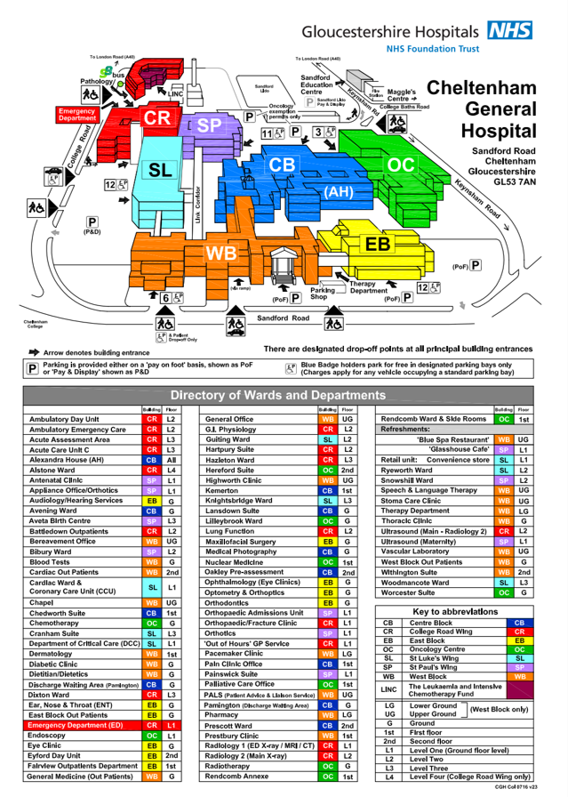
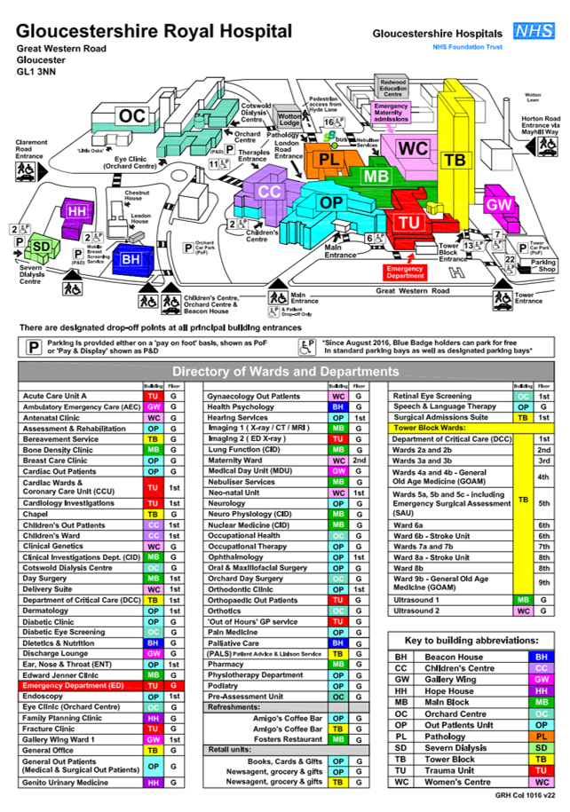
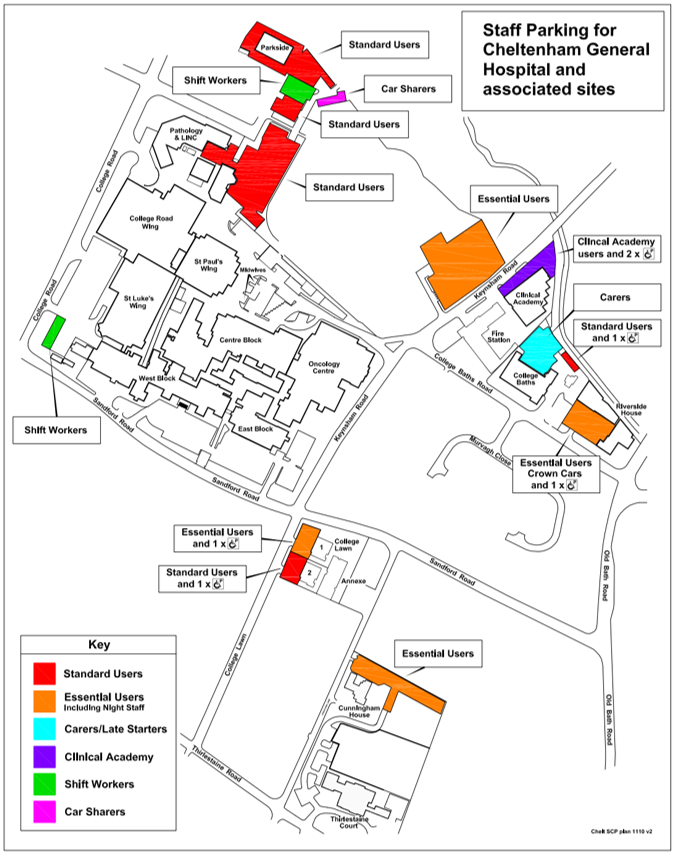
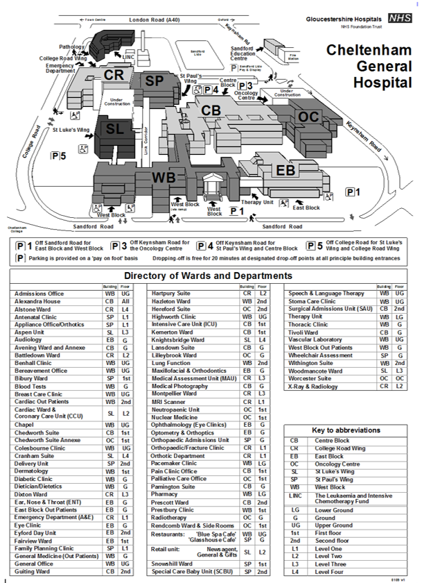
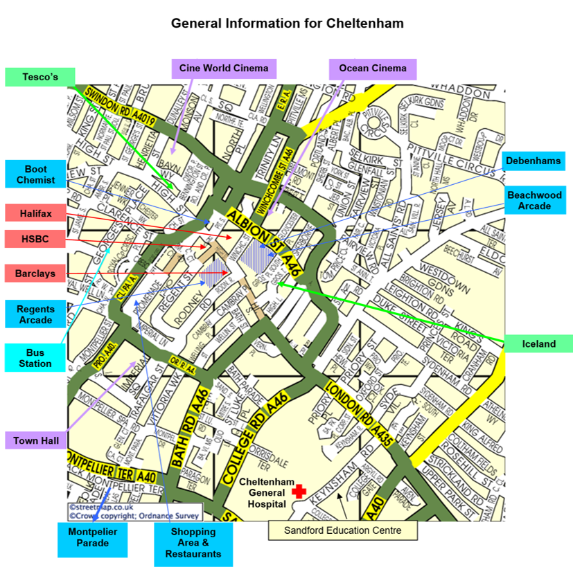
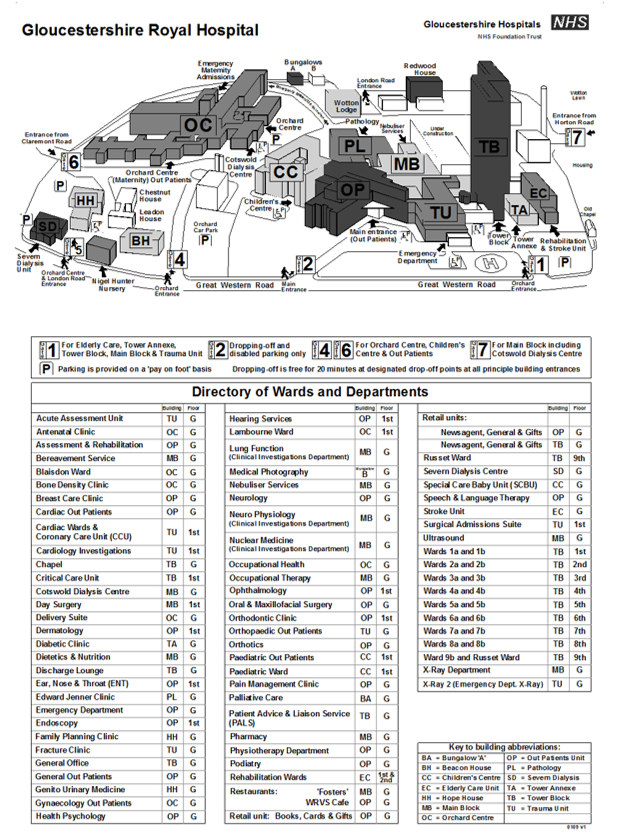
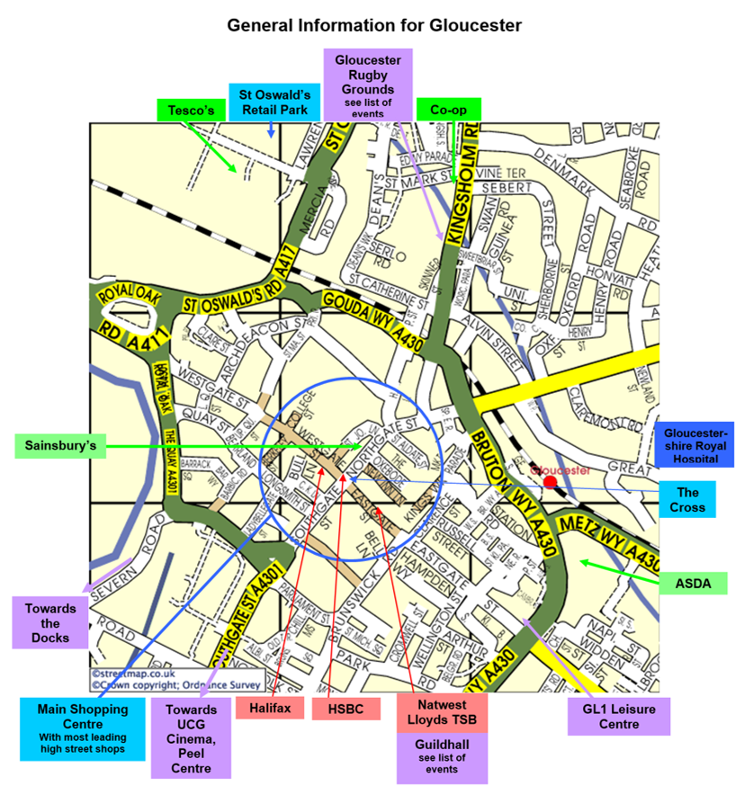

Directions, Maps and Routes
Directions to Cheltenham General Hospital:

Directions to Gloucestershire Royal Hospital:

Directions to Sandford Education Centre at Cheltenham General Hospital:
From M5 Junction 11 (either north or southbound)
- Leave the M5 at Junction 11. At the roundabout take the exit signposted for Cheltenham A40 (Golden Valley).
- At the next roundabout, take the third exit signposted to Cheltenham. The Thistle Hotel will be on your left. Go past GCHQ on your left and at the traffic lights take the right hand fork and continue along the Lansdown road until you get to a roundabout at Montpellier Terrace.
- Take the second exit and at the next traffic lights, turn right then immediately left onto the A46 Sandford Road - you will pass the hospital on the left.
- Turn left at the junction with the Old Bath Road then left again into College Baths road.
- Turn right onto Keynsham Road, the Lido will be straight ahead of you. Sandford Education Centre is on the right, opposite the Park.
From A40 East / A435 Cirencester
- Follow A40 into Cheltenham along the London Road. Turn left into Keynsham Road. The Education Centre is on your left, opposite Sandford Park.
Railway Station
- If you travel by train to Cheltenham Spa, take a taxi and ask for Keynsham Road.
Parking
- Parking at the Centre is for staff with Trust parking permits only.
- Alternatively you can park in the Lido car park opposite. Fees are:
- up to 1 hour £1.50
- up to 2 hours £2.90
- up to 3 hours £4.00
- up to 4 hours £4.80
- 4 to 6 hours £6.50
- Up to 24 hours £8.20
Staff Parking at Cheltenham General Hospital:

Cheltenham Hospital Directory:

Cheltenham General Information on surroundings:

Map of Cheltenham Hospital:
Map of Gloucestershire Hospital:
Map of Sandford Education Centre:
Map of Cheltenham General Hospital Parking:
Gloucestershire Hospital Directory:

Gloucestershire Royal Hospital Information on surroundings:
